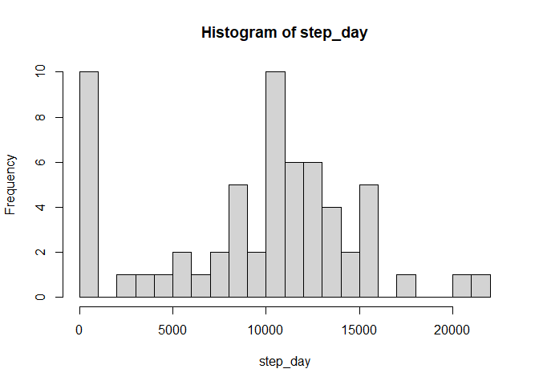
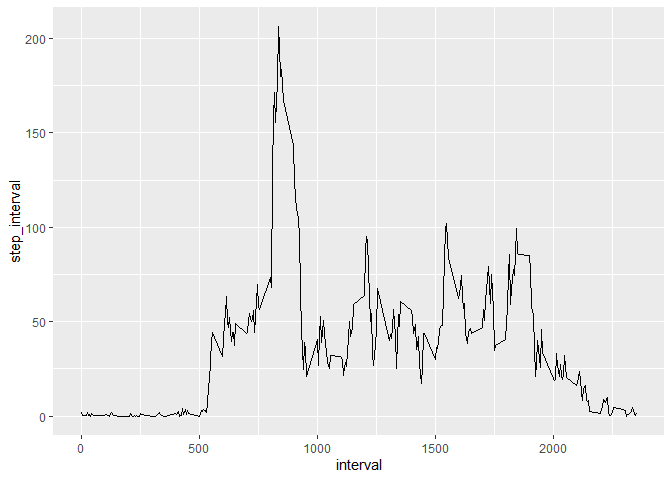
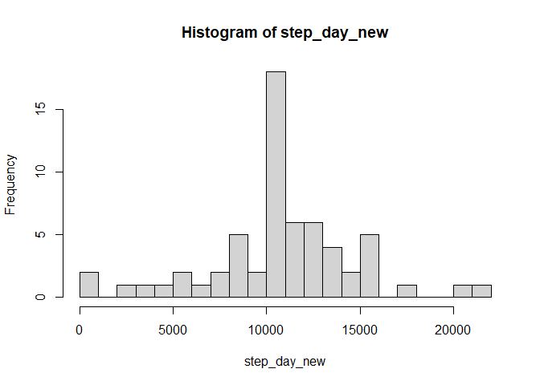
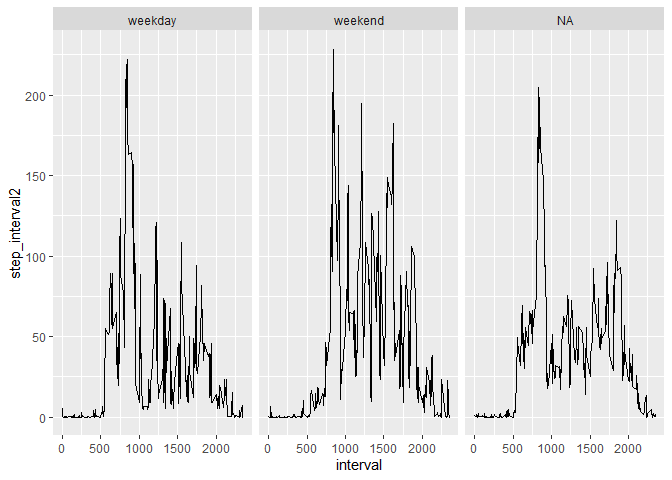

knitr::opts_chunk$set(echo = TRUE)Loading and preprocessing the data Show any code that is needed to :
read.csv("activity.csv")
activity <- read.csv("activity.csv")Explore data
head(activity)## steps date interval
## 1 NA 2012-10-01 0
## 2 NA 2012-10-01 5
## 3 NA 2012-10-01 10
## 4 NA 2012-10-01 15
## 5 NA 2012-10-01 20
## 6 NA 2012-10-01 25names(activity)## [1] "steps" "date" "interval"table(is.na(activity$steps))##
## FALSE TRUE
## 15264 2304class(activity$steps)## [1] "integer"class(activity$date)## [1] "character"class(activity$interval)## [1] "integer"unique(activity$date)## [1] "2012-10-01" "2012-10-02" "2012-10-03" "2012-10-04" "2012-10-05"
## [6] "2012-10-06" "2012-10-07" "2012-10-08" "2012-10-09" "2012-10-10"
## [11] "2012-10-11" "2012-10-12" "2012-10-13" "2012-10-14" "2012-10-15"
## [16] "2012-10-16" "2012-10-17" "2012-10-18" "2012-10-19" "2012-10-20"
## [21] "2012-10-21" "2012-10-22" "2012-10-23" "2012-10-24" "2012-10-25"
## [26] "2012-10-26" "2012-10-27" "2012-10-28" "2012-10-29" "2012-10-30"
## [31] "2012-10-31" "2012-11-01" "2012-11-02" "2012-11-03" "2012-11-04"
## [36] "2012-11-05" "2012-11-06" "2012-11-07" "2012-11-08" "2012-11-09"
## [41] "2012-11-10" "2012-11-11" "2012-11-12" "2012-11-13" "2012-11-14"
## [46] "2012-11-15" "2012-11-16" "2012-11-17" "2012-11-18" "2012-11-19"
## [51] "2012-11-20" "2012-11-21" "2012-11-22" "2012-11-23" "2012-11-24"
## [56] "2012-11-25" "2012-11-26" "2012-11-27" "2012-11-28" "2012-11-29"
## [61] "2012-11-30"length(unique(activity$date))## [1] 61unique(activity$interval)## [1] 0 5 10 15 20 25 30 35 40 45 50 55 100 105 110
## [16] 115 120 125 130 135 140 145 150 155 200 205 210 215 220 225
## [31] 230 235 240 245 250 255 300 305 310 315 320 325 330 335 340
## [46] 345 350 355 400 405 410 415 420 425 430 435 440 445 450 455
## [61] 500 505 510 515 520 525 530 535 540 545 550 555 600 605 610
## [76] 615 620 625 630 635 640 645 650 655 700 705 710 715 720 725
## [91] 730 735 740 745 750 755 800 805 810 815 820 825 830 835 840
## [106] 845 850 855 900 905 910 915 920 925 930 935 940 945 950 955
## [121] 1000 1005 1010 1015 1020 1025 1030 1035 1040 1045 1050 1055 1100 1105 1110
## [136] 1115 1120 1125 1130 1135 1140 1145 1150 1155 1200 1205 1210 1215 1220 1225
## [151] 1230 1235 1240 1245 1250 1255 1300 1305 1310 1315 1320 1325 1330 1335 1340
## [166] 1345 1350 1355 1400 1405 1410 1415 1420 1425 1430 1435 1440 1445 1450 1455
## [181] 1500 1505 1510 1515 1520 1525 1530 1535 1540 1545 1550 1555 1600 1605 1610
## [196] 1615 1620 1625 1630 1635 1640 1645 1650 1655 1700 1705 1710 1715 1720 1725
## [211] 1730 1735 1740 1745 1750 1755 1800 1805 1810 1815 1820 1825 1830 1835 1840
## [226] 1845 1850 1855 1900 1905 1910 1915 1920 1925 1930 1935 1940 1945 1950 1955
## [241] 2000 2005 2010 2015 2020 2025 2030 2035 2040 2045 2050 2055 2100 2105 2110
## [256] 2115 2120 2125 2130 2135 2140 2145 2150 2155 2200 2205 2210 2215 2220 2225
## [271] 2230 2235 2240 2245 2250 2255 2300 2305 2310 2315 2320 2325 2330 2335 2340
## [286] 2345 2350 2355length(unique(activity$interval))## [1] 288activity$steps <- as.numeric(activity$steps)
class(activity$steps)## [1] "numeric"library(tidyr)## Warning: package 'tidyr' was built under R version 4.2.3activity_wide <- pivot_wider(activity, names_from=interval, values_from=steps)
head(activity_wide)## # A tibble: 6 × 289
## date `0` `5` `10` `15` `20` `25` `30` `35` `40` `45` `50` `55`
## <chr> <dbl> <dbl> <dbl> <dbl> <dbl> <dbl> <dbl> <dbl> <dbl> <dbl> <dbl> <dbl>
## 1 2012-… NA NA NA NA NA NA NA NA NA NA NA NA
## 2 2012-… 0 0 0 0 0 0 0 0 0 0 0 0
## 3 2012-… 0 0 0 0 0 0 0 0 0 0 0 0
## 4 2012-… 47 0 0 0 0 0 0 0 0 0 0 0
## 5 2012-… 0 0 0 0 0 0 0 0 0 0 0 0
## 6 2012-… 0 0 0 0 0 0 0 0 0 0 0 0
## # ℹ 276 more variables: `100` <dbl>, `105` <dbl>, `110` <dbl>, `115` <dbl>,
## # `120` <dbl>, `125` <dbl>, `130` <dbl>, `135` <dbl>, `140` <dbl>,
## # `145` <dbl>, `150` <dbl>, `155` <dbl>, `200` <dbl>, `205` <dbl>,
## # `210` <dbl>, `215` <dbl>, `220` <dbl>, `225` <dbl>, `230` <dbl>,
## # `235` <dbl>, `240` <dbl>, `245` <dbl>, `250` <dbl>, `255` <dbl>,
## # `300` <dbl>, `305` <dbl>, `310` <dbl>, `315` <dbl>, `320` <dbl>,
## # `325` <dbl>, `330` <dbl>, `335` <dbl>, `340` <dbl>, `345` <dbl>, …What is mean total number of steps taken per day? For this part of the assignment, you can ignore the missing values in the dataset.
library(dplyr)## Warning: package 'dplyr' was built under R version 4.2.3##
## Attaching package: 'dplyr'## The following objects are masked from 'package:stats':
##
## filter, lag## The following objects are masked from 'package:base':
##
## intersect, setdiff, setequal, unionactivity %>% group_by(date) %>% summarize(sum(steps, na.rm=TRUE))## # A tibble: 61 × 2
## date `sum(steps, na.rm = TRUE)`
## <chr> <dbl>
## 1 2012-10-01 0
## 2 2012-10-02 126
## 3 2012-10-03 11352
## 4 2012-10-04 12116
## 5 2012-10-05 13294
## 6 2012-10-06 15420
## 7 2012-10-07 11015
## 8 2012-10-08 0
## 9 2012-10-09 12811
## 10 2012-10-10 9900
## # ℹ 51 more rowsstep_day_table <- activity %>% group_by(date) %>% summarize(step_day = sum(steps, na.rm=TRUE))
head(step_day_table)## # A tibble: 6 × 2
## date step_day
## <chr> <dbl>
## 1 2012-10-01 0
## 2 2012-10-02 126
## 3 2012-10-03 11352
## 4 2012-10-04 12116
## 5 2012-10-05 13294
## 6 2012-10-06 15420step_day <- step_day_table$step_day
step_day## [1] 0 126 11352 12116 13294 15420 11015 0 12811 9900 10304 17382
## [13] 12426 15098 10139 15084 13452 10056 11829 10395 8821 13460 8918 8355
## [25] 2492 6778 10119 11458 5018 9819 15414 0 10600 10571 0 10439
## [37] 8334 12883 3219 0 0 12608 10765 7336 0 41 5441 14339
## [49] 15110 8841 4472 12787 20427 21194 14478 11834 11162 13646 10183 7047
## [61] 0hist(step_day, breaks=20)
mean(step_day)## [1] 9354.23median(step_day)## [1] 10395The mean of the total number of steps taken per day is ‘r mean(step_day)’ The median of the total number of steps taken per day is ‘r median(step_day)’
What is the average daily activity pattern?
activity %>% group_by(interval) %>% summarize(mean(steps, na.rm=TRUE))## # A tibble: 288 × 2
## interval `mean(steps, na.rm = TRUE)`
## <int> <dbl>
## 1 0 1.72
## 2 5 0.340
## 3 10 0.132
## 4 15 0.151
## 5 20 0.0755
## 6 25 2.09
## 7 30 0.528
## 8 35 0.868
## 9 40 0
## 10 45 1.47
## # ℹ 278 more rowsstep_interval_table <- activity %>% group_by(interval) %>% summarize(step_interval = mean(steps, na.rm=TRUE))
head(step_interval_table)## # A tibble: 6 × 2
## interval step_interval
## <int> <dbl>
## 1 0 1.72
## 2 5 0.340
## 3 10 0.132
## 4 15 0.151
## 5 20 0.0755
## 6 25 2.09step_interval <- step_interval_table$step_interval
step_interval## [1] 1.7169811 0.3396226 0.1320755 0.1509434 0.0754717 2.0943396
## [7] 0.5283019 0.8679245 0.0000000 1.4716981 0.3018868 0.1320755
## [13] 0.3207547 0.6792453 0.1509434 0.3396226 0.0000000 1.1132075
## [19] 1.8301887 0.1698113 0.1698113 0.3773585 0.2641509 0.0000000
## [25] 0.0000000 0.0000000 1.1320755 0.0000000 0.0000000 0.1320755
## [31] 0.0000000 0.2264151 0.0000000 0.0000000 1.5471698 0.9433962
## [37] 0.0000000 0.0000000 0.0000000 0.0000000 0.2075472 0.6226415
## [43] 1.6226415 0.5849057 0.4905660 0.0754717 0.0000000 0.0000000
## [49] 1.1886792 0.9433962 2.5660377 0.0000000 0.3396226 0.3584906
## [55] 4.1132075 0.6603774 3.4905660 0.8301887 3.1132075 1.1132075
## [61] 0.0000000 1.5660377 3.0000000 2.2452830 3.3207547 2.9622642
## [67] 2.0943396 6.0566038 16.0188679 18.3396226 39.4528302 44.4905660
## [73] 31.4905660 49.2641509 53.7735849 63.4528302 49.9622642 47.0754717
## [79] 52.1509434 39.3396226 44.0188679 44.1698113 37.3584906 49.0377358
## [85] 43.8113208 44.3773585 50.5094340 54.5094340 49.9245283 50.9811321
## [91] 55.6792453 44.3207547 52.2641509 69.5471698 57.8490566 56.1509434
## [97] 73.3773585 68.2075472 129.4339623 157.5283019 171.1509434 155.3962264
## [103] 177.3018868 206.1698113 195.9245283 179.5660377 183.3962264 167.0188679
## [109] 143.4528302 124.0377358 109.1132075 108.1132075 103.7169811 95.9622642
## [115] 66.2075472 45.2264151 24.7924528 38.7547170 34.9811321 21.0566038
## [121] 40.5660377 26.9811321 42.4150943 52.6603774 38.9245283 50.7924528
## [127] 44.2830189 37.4150943 34.6981132 28.3396226 25.0943396 31.9433962
## [133] 31.3584906 29.6792453 21.3207547 25.5471698 28.3773585 26.4716981
## [139] 33.4339623 49.9811321 42.0377358 44.6037736 46.0377358 59.1886792
## [145] 63.8679245 87.6981132 94.8490566 92.7735849 63.3962264 50.1698113
## [151] 54.4716981 32.4150943 26.5283019 37.7358491 45.0566038 67.2830189
## [157] 42.3396226 39.8867925 43.2641509 40.9811321 46.2452830 56.4339623
## [163] 42.7547170 25.1320755 39.9622642 53.5471698 47.3207547 60.8113208
## [169] 55.7547170 51.9622642 43.5849057 48.6981132 35.4716981 37.5471698
## [175] 41.8490566 27.5094340 17.1132075 26.0754717 43.6226415 43.7735849
## [181] 30.0188679 36.0754717 35.4905660 38.8490566 45.9622642 47.7547170
## [187] 48.1320755 65.3207547 82.9056604 98.6603774 102.1132075 83.9622642
## [193] 62.1320755 64.1320755 74.5471698 63.1698113 56.9056604 59.7735849
## [199] 43.8679245 38.5660377 44.6603774 45.4528302 46.2075472 43.6792453
## [205] 46.6226415 56.3018868 50.7169811 61.2264151 72.7169811 78.9433962
## [211] 68.9433962 59.6603774 75.0943396 56.5094340 34.7735849 37.4528302
## [217] 40.6792453 58.0188679 74.6981132 85.3207547 59.2641509 67.7735849
## [223] 77.6981132 74.2452830 85.3396226 99.4528302 86.5849057 85.6037736
## [229] 84.8679245 77.8301887 58.0377358 53.3584906 36.3207547 20.7169811
## [235] 27.3962264 40.0188679 30.2075472 25.5471698 45.6603774 33.5283019
## [241] 19.6226415 19.0188679 19.3396226 33.3396226 26.8113208 21.1698113
## [247] 27.3018868 21.3396226 19.5471698 21.3207547 32.3018868 20.1509434
## [253] 15.9433962 17.2264151 23.4528302 19.2452830 12.4528302 8.0188679
## [259] 14.6603774 16.3018868 8.6792453 7.7924528 8.1320755 2.6226415
## [265] 1.4528302 3.6792453 4.8113208 8.5094340 7.0754717 8.6981132
## [271] 9.7547170 2.2075472 0.3207547 0.1132075 1.6037736 4.6037736
## [277] 3.3018868 2.8490566 0.0000000 0.8301887 0.9622642 1.5849057
## [283] 2.6037736 4.6981132 3.3018868 0.6415094 0.2264151 1.0754717library(ggplot2)## Warning: package 'ggplot2' was built under R version 4.2.3timeseries <- ggplot(step_interval_table, aes(x=interval, y=step_interval))+geom_line()
timeseries 2. Which 5-minute interval, on average across all the days in the dataset, contains the maximum number of steps?
max(step_interval)## [1] 206.1698subset(step_interval_table, step_interval == max(step_interval))## # A tibble: 1 × 2
## interval step_interval
## <int> <dbl>
## 1 835 206.The 835 interval contains the maximum average number of steps.
Imputing missing values
table(is.na(activity$steps))##
## FALSE TRUE
## 15264 2304The total number of missing values is 2304.
library(dplyr)
library(zoo)##
## Attaching package: 'zoo'## The following objects are masked from 'package:base':
##
## as.Date, as.Date.numericactivity_new <- activity
activity_new <- activity_new %>% group_by(interval) %>% mutate_at("steps", na.aggregate, FUN=mean)
head(activity_new)## # A tibble: 6 × 3
## # Groups: interval [6]
## steps date interval
## <dbl> <chr> <int>
## 1 1.72 2012-10-01 0
## 2 0.340 2012-10-01 5
## 3 0.132 2012-10-01 10
## 4 0.151 2012-10-01 15
## 5 0.0755 2012-10-01 20
## 6 2.09 2012-10-01 25table(is.na(activity_new$steps))##
## FALSE
## 17568activity_new %>% group_by(date) %>% summarize(sum(steps))## # A tibble: 61 × 2
## date `sum(steps)`
## <chr> <dbl>
## 1 2012-10-01 10766.
## 2 2012-10-02 126
## 3 2012-10-03 11352
## 4 2012-10-04 12116
## 5 2012-10-05 13294
## 6 2012-10-06 15420
## 7 2012-10-07 11015
## 8 2012-10-08 10766.
## 9 2012-10-09 12811
## 10 2012-10-10 9900
## # ℹ 51 more rowsstep_day_table_new <- activity_new %>% group_by(date) %>% summarize(step_day_new = sum(steps))
head(step_day_table_new)## # A tibble: 6 × 2
## date step_day_new
## <chr> <dbl>
## 1 2012-10-01 10766.
## 2 2012-10-02 126
## 3 2012-10-03 11352
## 4 2012-10-04 12116
## 5 2012-10-05 13294
## 6 2012-10-06 15420step_day_new <- step_day_table_new$step_day_new
step_day_new## [1] 10766.19 126.00 11352.00 12116.00 13294.00 15420.00 11015.00 10766.19
## [9] 12811.00 9900.00 10304.00 17382.00 12426.00 15098.00 10139.00 15084.00
## [17] 13452.00 10056.00 11829.00 10395.00 8821.00 13460.00 8918.00 8355.00
## [25] 2492.00 6778.00 10119.00 11458.00 5018.00 9819.00 15414.00 10766.19
## [33] 10600.00 10571.00 10766.19 10439.00 8334.00 12883.00 3219.00 10766.19
## [41] 10766.19 12608.00 10765.00 7336.00 10766.19 41.00 5441.00 14339.00
## [49] 15110.00 8841.00 4472.00 12787.00 20427.00 21194.00 14478.00 11834.00
## [57] 11162.00 13646.00 10183.00 7047.00 10766.19hist(step_day_new, breaks=20)
mean(step_day_new)## [1] 10766.19median(step_day_new)## [1] 10766.19The old mean was 9354.23 and became 10766.19 The old median was 10395 and became 10766.19 Imputing missing data changes the estimates of the total daily number of steps, and in this case causes a possible overestimation of the effect.
Are there differences in activity patterns between weekdays and weekends?
activity_new$date <- as.Date(activity_new$date)
class(activity_new$date)## [1] "Date"head(activity_new$date)## [1] "2012-10-01" "2012-10-01" "2012-10-01" "2012-10-01" "2012-10-01"
## [6] "2012-10-01"activity_new$weekday <- weekdays(activity_new$date)
activity_new %>% mutate(weekday2 = case_when(weekday==c("maandag", "dinsdag", "woensdag", "donderdag", "vrijdag")~'weekday', weekday==c("zaterdag", "zondag")~'weekend'))## Warning: There were 576 warnings in `mutate()`.
## The first warning was:
## ℹ In argument: `weekday2 = case_when(...)`.
## ℹ In group 1: `interval = 0`.
## Caused by warning in `weekday == c("maandag", "dinsdag", "woensdag", "donderdag", "vrijdag")`:
## ! longer object length is not a multiple of shorter object length
## ℹ Run `dplyr::last_dplyr_warnings()` to see the 575 remaining warnings.## # A tibble: 17,568 × 5
## # Groups: interval [288]
## steps date interval weekday weekday2
## <dbl> <date> <int> <chr> <chr>
## 1 1.72 2012-10-01 0 maandag weekday
## 2 0.340 2012-10-01 5 maandag weekday
## 3 0.132 2012-10-01 10 maandag weekday
## 4 0.151 2012-10-01 15 maandag weekday
## 5 0.0755 2012-10-01 20 maandag weekday
## 6 2.09 2012-10-01 25 maandag weekday
## 7 0.528 2012-10-01 30 maandag weekday
## 8 0.868 2012-10-01 35 maandag weekday
## 9 0 2012-10-01 40 maandag weekday
## 10 1.47 2012-10-01 45 maandag weekday
## # ℹ 17,558 more rowsactivity_new2 <- activity_new %>% mutate(weekday2 = case_when(weekday==c("maandag", "dinsdag", "woensdag", "donderdag", "vrijdag")~'weekday', weekday==c("zaterdag", "zondag")~'weekend'))## Warning: There were 576 warnings in `mutate()`.
## The first warning was:
## ℹ In argument: `weekday2 = case_when(...)`.
## ℹ In group 1: `interval = 0`.
## Caused by warning in `weekday == c("maandag", "dinsdag", "woensdag", "donderdag", "vrijdag")`:
## ! longer object length is not a multiple of shorter object length
## ℹ Run `dplyr::last_dplyr_warnings()` to see the 575 remaining warnings.head(activity_new2)## # A tibble: 6 × 5
## # Groups: interval [6]
## steps date interval weekday weekday2
## <dbl> <date> <int> <chr> <chr>
## 1 1.72 2012-10-01 0 maandag weekday
## 2 0.340 2012-10-01 5 maandag weekday
## 3 0.132 2012-10-01 10 maandag weekday
## 4 0.151 2012-10-01 15 maandag weekday
## 5 0.0755 2012-10-01 20 maandag weekday
## 6 2.09 2012-10-01 25 maandag weekdayactivity_new2 %>% group_by(interval, weekday2) %>% summarize(mean(steps))## `summarise()` has grouped output by 'interval'. You can override using the
## `.groups` argument.## # A tibble: 864 × 3
## # Groups: interval [288]
## interval weekday2 `mean(steps)`
## <int> <chr> <dbl>
## 1 0 weekday 5.04
## 2 0 weekend 0.215
## 3 0 <NA> 1.22
## 4 5 weekday 0.0679
## 5 5 weekend 0.0425
## 6 5 <NA> 0.458
## 7 10 weekday 0.0264
## 8 10 weekend 0.0165
## 9 10 <NA> 0.178
## 10 15 weekday 0.0302
## # ℹ 854 more rowsstep_interval_table2 <- activity_new2 %>% group_by(interval, weekday2) %>% summarize(step_interval2 = mean(steps))## `summarise()` has grouped output by 'interval'. You can override using the
## `.groups` argument.head(step_interval_table2)## # A tibble: 6 × 3
## # Groups: interval [2]
## interval weekday2 step_interval2
## <int> <chr> <dbl>
## 1 0 weekday 5.04
## 2 0 weekend 0.215
## 3 0 <NA> 1.22
## 4 5 weekday 0.0679
## 5 5 weekend 0.0425
## 6 5 <NA> 0.458step_interval2 <- step_interval_table2$step_interval2
step_interval2## [1] 5.043396e+00 2.146226e-01 1.222905e+00 6.792453e-02 4.245283e-02
## [6] 4.580957e-01 2.641509e-02 1.650943e-02 1.781483e-01 3.018868e-02
## [11] 1.886792e-02 2.035981e-01 1.509434e-02 9.433962e-03 1.017990e-01
## [16] 4.188679e-01 6.761792e+00 1.615621e+00 1.056604e-01 6.603774e-02
## [21] 7.125932e-01 1.735849e-01 1.084906e-01 1.170689e+00 0.000000e+00
## [26] 0.000000e+00 0.000000e+00 2.943396e-01 1.839623e-01 1.985081e+00
## [31] 6.037736e-02 3.773585e-02 4.071961e-01 2.641509e-02 1.650943e-02
## [36] 1.781483e-01 6.415094e-02 4.009434e-02 4.326459e-01 1.358491e-01
## [41] 8.490566e-02 9.161913e-01 3.018868e-02 1.886792e-02 2.035981e-01
## [46] 6.792453e-02 4.245283e-02 4.580957e-01 0.000000e+00 0.000000e+00
## [51] 0.000000e+00 2.226415e-01 1.391509e-01 1.501536e+00 3.660377e-01
## [56] 2.287736e-01 2.468627e+00 3.396226e-02 1.146226e+00 1.974550e-02
## [61] 3.396226e-02 2.122642e-02 2.290478e-01 9.754717e-01 4.716981e-02
## [66] 2.996928e-01 1.452830e+00 3.301887e-02 3.071523e-02 0.000000e+00
## [71] 0.000000e+00 0.000000e+00 0.000000e+00 0.000000e+00 0.000000e+00
## [76] 0.000000e+00 0.000000e+00 0.000000e+00 2.264151e-01 6.415094e-01
## [81] 1.433962e+00 0.000000e+00 0.000000e+00 0.000000e+00 0.000000e+00
## [86] 0.000000e+00 0.000000e+00 7.264151e-01 1.650943e-02 1.535761e-02
## [91] 0.000000e+00 0.000000e+00 0.000000e+00 4.528302e-02 2.830189e-02
## [96] 3.053971e-01 0.000000e+00 0.000000e+00 0.000000e+00 0.000000e+00
## [101] 0.000000e+00 0.000000e+00 3.009434e+00 1.933962e-01 1.458973e+00
## [106] 1.886792e-01 1.179245e-01 1.272488e+00 0.000000e+00 0.000000e+00
## [111] 0.000000e+00 0.000000e+00 0.000000e+00 0.000000e+00 0.000000e+00
## [116] 0.000000e+00 0.000000e+00 0.000000e+00 0.000000e+00 0.000000e+00
## [121] 4.150943e-02 1.400943e+00 2.413339e-02 1.245283e-01 7.783019e-02
## [126] 8.398420e-01 3.245283e-01 2.028302e-01 2.188679e+00 1.169811e-01
## [131] 7.311321e-02 7.889425e-01 9.811321e-02 1.311321e+00 4.291356e-01
## [136] 1.509434e-02 9.433962e-03 1.017990e-01 0.000000e+00 0.000000e+00
## [141] 0.000000e+00 0.000000e+00 0.000000e+00 0.000000e+00 2.377358e-01
## [146] 1.485849e-01 1.603335e+00 4.088679e+00 1.179245e-01 3.655112e-01
## [151] 9.132075e-01 3.207547e-01 3.368144e+00 0.000000e+00 0.000000e+00
## [156] 0.000000e+00 6.792453e-02 4.245283e-02 4.580957e-01 7.169811e-02
## [161] 4.481132e-02 4.835454e-01 4.422642e+00 3.514151e+00 4.152699e+00
## [166] 1.320755e-01 3.707547e+00 2.163229e-01 6.981132e-01 4.363208e-01
## [171] 4.708205e+00 1.660377e-01 1.228774e+00 9.104871e-01 6.226415e-01
## [176] 1.013915e+01 2.385257e+00 2.226415e-01 2.139151e+00 1.129443e+00
## [181] 0.000000e+00 0.000000e+00 0.000000e+00 3.013208e+00 1.957547e-01
## [186] 1.484423e+00 1.300000e+00 3.750000e-01 3.883721e+00 2.249057e+00
## [191] 2.806604e-01 2.609917e+00 6.364151e+00 1.165094e+00 3.014041e+00
## [196] 4.592453e+00 3.702830e-01 3.065380e+00 4.188679e-01 2.617925e-01
## [201] 2.824923e+00 3.711321e+00 7.570755e-01 7.587977e+00 3.203774e+00
## [206] 2.002358e+00 2.160685e+01 3.667925e+00 4.542453e+00 2.431856e+01
## [211] 1.849057e+01 1.268160e+01 4.930847e+01 5.529811e+01 1.631132e+01
## [216] 4.721983e+01 5.119811e+01 3.936321e+00 3.203379e+01 5.315283e+01
## [221] 6.158019e+00 5.637955e+01 6.615472e+01 6.721698e+00 5.964809e+01
## [226] 7.679057e+01 1.480660e+01 6.940149e+01 8.369245e+01 6.245283e+00
## [231] 5.025143e+01 8.401509e+01 8.384434e+00 4.568319e+01 8.923019e+01
## [236] 8.518868e+00 5.164546e+01 7.756792e+01 1.816745e+01 3.438833e+01
## [241] 5.730377e+01 8.752358e+00 4.749057e+01 8.373396e+01 1.764623e+01
## [246] 3.990347e+01 8.937170e+01 1.091981e+01 3.018122e+01 5.480755e+01
## [251] 7.754717e+00 5.537648e+01 6.506226e+01 1.385142e+01 4.444318e+01
## [256] 3.277547e+01 1.467217e+01 5.260202e+01 3.280189e+01 1.418868e+01
## [261] 6.138482e+01 4.310189e+01 9.438679e+00 6.554761e+01 2.838491e+01
## [266] 7.115566e+00 6.289820e+01 1.959623e+01 1.749764e+01 6.450943e+01
## [271] 5.183585e+01 1.770991e+01 6.363712e+01 3.646415e+01 1.304009e+01
## [276] 5.196753e+01 3.355283e+01 2.840802e+01 6.105397e+01 1.014094e+02
## [281] 4.644340e+01 6.643572e+01 1.234698e+02 4.110613e+01 4.570338e+01
## [286] 8.853019e+01 3.214387e+01 5.308732e+01 7.757547e+01 5.529717e+01
## [291] 7.576481e+01 4.314151e+01 5.302594e+01 7.686134e+01 9.138679e+01
## [296] 1.041792e+02 1.429807e+02 1.359057e+02 1.318160e+02 1.673405e+02
## [301] 2.100302e+02 1.087689e+02 1.737152e+02 1.952792e+02 9.042453e+01
## [306] 1.582089e+02 1.923604e+02 1.611627e+02 1.768025e+02 2.157340e+02
## [311] 2.013962e+02 2.048337e+02 2.223849e+02 1.768656e+02 1.933168e+02
## [316] 1.947132e+02 2.284458e+02 1.669495e+02 1.755792e+02 2.131745e+02
## [321] 1.796740e+02 1.629038e+02 1.680024e+02 1.677929e+02 1.640906e+02
## [326] 9.755660e+01 1.471922e+02 1.555075e+02 1.471297e+02 1.124230e+02
## [331] 1.178226e+02 1.811392e+02 9.368758e+01 1.201226e+02 1.683892e+02
## [336] 9.410619e+01 1.566434e+02 1.022146e+02 9.168802e+01 1.256925e+02
## [341] 8.849528e+01 9.043747e+01 8.924151e+01 7.490094e+01 5.923344e+01
## [346] 1.080453e+02 7.027830e+01 2.595656e+01 6.715849e+01 1.122406e+01
## [351] 1.746424e+01 9.565094e+01 2.959434e+01 2.722729e+01 7.419623e+01
## [356] 2.724764e+01 2.730013e+01 2.091132e+01 3.025708e+01 1.937867e+01
## [361] 8.913208e+00 5.407075e+01 4.541466e+01 2.279623e+01 6.574764e+01
## [366] 2.074199e+01 8.878302e+01 6.892689e+01 2.669943e+01 3.663208e+01
## [371] 7.920755e+01 5.144888e+01 5.688491e+01 7.261557e+01 2.847960e+01
## [376] 2.365849e+01 1.314741e+02 4.209215e+01 1.565660e+01 1.347854e+02
## [381] 3.410268e+01 1.088302e+01 1.441769e+02 2.372269e+01 6.939623e+00
## [386] 1.173373e+02 2.577885e+01 5.667925e+00 6.304245e+01 2.715577e+01
## [391] 5.018868e+00 5.376179e+01 2.442957e+01 6.388679e+00 6.474292e+01
## [396] 3.178412e+01 6.271698e+00 6.441981e+01 3.104168e+01 5.935849e+00
## [401] 4.845991e+01 3.170689e+01 4.864151e+00 6.516509e+01 1.699079e+01
## [406] 6.209434e+00 6.619340e+01 2.248223e+01 5.675472e+00 4.904717e+01
## [411] 2.981132e+01 2.329434e+01 2.530896e+01 2.742694e+01 8.786792e+00
## [416] 2.655425e+01 4.044581e+01 1.719623e+01 5.737264e+01 5.623036e+01
## [421] 1.750755e+01 2.612972e+01 5.070206e+01 8.920755e+00 3.870047e+01
## [426] 5.400044e+01 2.230755e+01 4.037972e+01 5.260904e+01 2.343774e+01
## [431] 8.727358e+01 6.227775e+01 6.067358e+01 1.087335e+02 5.626371e+01
## [436] 1.041396e+02 1.595873e+02 7.049978e+01 1.186698e+02 1.702311e+02
## [441] 7.528477e+01 1.016547e+02 1.949717e+02 7.169460e+01 7.577925e+01
## [446] 1.110495e+02 5.165072e+01 3.503396e+01 7.602123e+01 4.888021e+01
## [451] 1.209943e+02 3.693396e+01 4.226415e+01 7.418302e+01 5.555189e+01
## [456] 1.839710e+01 2.820566e+01 5.169104e+01 2.145678e+01 1.344717e+01
## [461] 5.034198e+01 4.103905e+01 1.141132e+01 5.725708e+01 5.061123e+01
## [466] 1.345660e+01 1.082854e+02 7.217244e+01 2.406792e+01 9.254245e+01
## [471] 3.724879e+01 2.957736e+01 8.461085e+01 3.396358e+01 2.725283e+01
## [476] 7.978302e+01 4.019351e+01 8.896226e+00 8.562264e+01 4.013734e+01
## [481] 7.354906e+01 3.090566e+01 4.274945e+01 7.198679e+01 4.130425e+01
## [486] 5.563186e+01 2.515094e+01 1.459434e+01 5.208776e+01 5.026415e+00
## [491] 9.516509e+00 3.271303e+01 1.079245e+01 7.099528e+01 4.097236e+01
## [496] 7.080943e+01 1.264434e+02 3.597060e+01 2.776415e+01 1.219151e+02
## [501] 3.799079e+01 3.016226e+01 1.243514e+02 5.611760e+01 6.725094e+01
## [506] 5.959434e+01 5.236683e+01 2.189245e+01 9.749528e+01 5.048398e+01
## [511] 8.716981e+00 9.932311e+01 4.132383e+01 2.853962e+01 9.021226e+01
## [516] 4.566257e+01 7.794340e+00 1.019340e+02 2.954322e+01 8.509434e+00
## [521] 9.656840e+01 3.331944e+01 1.076981e+01 1.279811e+02 3.305222e+01
## [526] 1.710189e+01 1.036887e+02 1.575691e+01 5.422642e+00 4.713915e+01
## [531] 1.424572e+01 5.915094e+00 2.850943e+01 3.031110e+01 8.824528e+00
## [536] 2.345283e+01 5.546775e+01 2.155472e+01 1.000967e+02 3.846204e+01
## [541] 4.140377e+01 4.037736e+01 2.544405e+01 4.581509e+01 3.188443e+01
## [546] 3.459017e+01 1.359811e+01 3.543632e+01 4.059193e+01 8.469811e+00
## [551] 6.248113e+01 4.151733e+01 4.479245e+01 7.112028e+01 4.155375e+01
## [556] 2.645094e+01 9.171934e+01 4.452962e+01 1.132642e+01 9.614151e+01
## [561] 4.775954e+01 2.596415e+01 1.387901e+02 6.080474e+01 6.438113e+01
## [566] 1.106132e+02 8.205880e+01 1.045321e+02 1.488325e+02 8.796051e+01
## [571] 1.082226e+02 1.487642e+02 9.201316e+01 8.329245e+01 1.441203e+02
## [576] 7.292584e+01 3.062642e+01 1.371415e+02 5.550373e+01 2.212642e+01
## [581] 1.318915e+02 6.129443e+01 2.260943e+01 1.449434e+02 7.352874e+01
## [586] 1.263396e+01 1.648962e+02 5.599649e+01 2.028113e+01 1.751132e+02
## [591] 4.343089e+01 2.595472e+01 1.823467e+02 4.483414e+01 9.573585e+00
## [596] 9.748349e+01 4.186836e+01 2.261321e+01 3.569575e+01 4.281000e+01
## [601] 8.932075e+00 7.120755e+01 4.803028e+01 1.349057e+01 3.505660e+01
## [606] 5.482010e+01 4.984151e+01 4.565094e+01 4.546599e+01 2.843585e+01
## [611] 3.745991e+01 4.838131e+01 1.232453e+01 5.370283e+01 5.328170e+01
## [616] 3.196038e+01 2.153774e+01 6.843045e+01 4.904340e+01 1.783962e+01
## [621] 5.722290e+01 4.404528e+01 1.990330e+01 7.291005e+01 3.554340e+01
## [626] 8.783962e+01 7.854849e+01 3.068868e+01 4.811792e+01 9.590039e+01
## [631] 3.518868e+01 8.149292e+01 7.445853e+01 4.333208e+01 4.495755e+01
## [636] 6.619307e+01 9.401887e+01 4.588679e+01 7.612725e+01 7.350189e+01
## [641] 2.881368e+01 5.771040e+01 3.105472e+01 8.971698e+00 4.043879e+01
## [646] 2.719057e+01 4.130660e+01 3.912242e+01 5.053585e+01 9.045991e+01
## [651] 2.912549e+01 7.250377e+01 6.912736e+01 5.258359e+01 7.993962e+01
## [656] 6.896226e+01 7.454629e+01 8.146415e+01 6.916509e+01 8.922334e+01
## [661] 5.295283e+01 3.590802e+01 6.507723e+01 4.595472e+01 2.409670e+01
## [666] 8.097367e+01 4.563962e+01 5.333726e+01 8.968583e+01 3.774906e+01
## [671] 2.190566e+01 9.247038e+01 3.536792e+01 1.816745e+01 1.094581e+02
## [676] 4.569057e+01 4.443160e+01 1.221922e+02 4.371698e+01 5.182311e+01
## [681] 1.030215e+02 4.532075e+01 1.062005e+02 9.113997e+01 3.747358e+01
## [686] 9.973349e+01 9.312418e+01 3.866604e+01 8.585377e+01 8.544537e+01
## [691] 3.940755e+01 7.512972e+01 5.919043e+01 2.907170e+01 7.854481e+01
## [696] 5.432075e+01 1.216415e+01 3.866509e+01 4.150241e+01 1.384340e+01
## [701] 1.746462e+01 2.292058e+01 3.207925e+01 1.692453e+01 2.825538e+01
## [706] 4.570377e+01 3.100236e+01 4.037429e+01 2.204151e+01 1.340094e+01
## [711] 3.523344e+01 9.009434e+00 8.943396e+00 3.248223e+01 9.132075e+00
## [716] 3.070755e+01 5.693725e+01 9.405660e+00 2.044104e+01 4.157306e+01
## [721] 1.392453e+01 9.202830e+00 2.288635e+01 1.010377e+01 1.000236e+01
## [726] 2.276964e+01 1.346792e+01 1.316745e+01 2.185344e+01 1.026792e+01
## [731] 1.241745e+01 4.259763e+01 5.362264e+00 8.226415e+00 3.525713e+01
## [736] 7.833962e+00 2.646226e+00 2.771742e+01 1.276038e+01 1.391274e+01
## [741] 3.317464e+01 1.226792e+01 8.167453e+00 2.589996e+01 5.609434e+00
## [746] 1.969340e+01 2.276130e+01 1.636415e+01 1.279009e+01 2.406055e+01
## [751] 1.936038e+01 1.203774e+01 3.908161e+01 1.813019e+01 3.051887e+01
## [756] 1.869197e+01 5.888679e+00 2.161792e+01 1.722598e+01 1.404528e+01
## [761] 7.403302e+00 1.979377e+01 2.349057e+01 9.056604e+00 2.612242e+01
## [766] 1.764906e+01 3.678066e+01 1.635410e+01 1.689057e+01 1.305660e+01
## [771] 1.130847e+01 1.370377e+01 1.487736e+01 5.420799e+00 2.343208e+01
## [776] 3.795755e+01 8.286090e+00 1.606038e+01 2.653774e+01 1.445371e+01
## [781] 1.313585e+01 2.383491e+01 4.823168e+00 2.358491e+00 8.099057e+00
## [786] 8.999122e+00 1.626415e+00 1.451651e+01 8.457218e+00 5.245283e-01
## [791] 3.278302e-01 3.537516e+00 2.905660e-01 2.306604e+00 1.564283e+00
## [796] 4.535849e+00 2.709906e+00 3.660377e+00 1.506226e+01 6.014151e-01
## [801] 3.210619e+00 1.130189e+01 1.063679e+00 9.245283e+00 1.415094e+00
## [806] 8.844340e-01 9.543659e+00 1.739623e+00 1.087264e+00 1.173234e+01
## [811] 1.950943e+00 1.219340e+00 1.315753e+01 4.415094e-01 2.759434e-01
## [816] 2.977622e+00 6.415094e-02 2.165094e+00 3.729706e-02 2.264151e-02
## [821] 1.415094e-02 1.526986e-01 3.207547e-01 1.325472e+00 1.953927e+00
## [826] 9.207547e-01 2.320047e+01 2.000439e+00 6.603774e-01 4.127358e-01
## [831] 4.453708e+00 3.969811e+00 3.561321e-01 3.052216e+00 0.000000e+00
## [836] 0.000000e+00 0.000000e+00 2.166038e+00 1.037736e-01 6.546731e-01
## [841] 1.924528e-01 1.202830e-01 1.297938e+00 5.816981e+00 1.981132e-01
## [846] 8.587100e-01 4.320755e+00 2.450472e+00 2.232997e+00 5.539623e+00
## [851] 2.258726e+01 1.174199e+00 7.060377e+00 1.216274e+01 7.792892e-01
## [856] 9.283019e-01 3.330189e+00 7.459412e-02 4.528302e-02 2.830189e-02
## [861] 3.053971e-01 2.150943e-01 1.344340e-01 1.450636e+00timeseries2 <- ggplot(step_interval_table2, aes(x=interval, y=step_interval2))+geom_line()
timeseries2+facet_grid(.~weekday2)
Unfortunately, I was not able to fix the problem with the NA for the date being a weekday or weekend day.